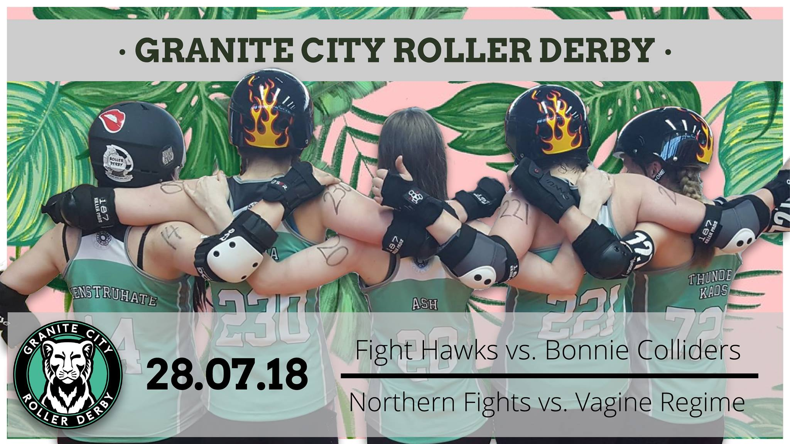

Granite City host Double Header
A double header to hit Granite City on the 28th of July! The Beach leisure centre of Aberdeen is home to Granite City Roller Derby's Fight Hawks and Northern Fights; both taking on tricky opponents in this derby day duo! Doors open at 12:30 with the first whistle at 1pm, entry on the door for £4 (under 12's go free!).

To start off the day it's the battle of the B teams, with the Fight Hawks taking on Dundee Roller Derby's Bonnie Colliders! We caught up with the captains to see how they are preparing for the weekend!
 Fight Hawks Captain: Skeevy Wonder #64
How long skating: 4 and a half years apparently! Time flies.
How long captaining team: About 8 months.
Fight Hawks Captain: Skeevy Wonder #64
How long skating: 4 and a half years apparently! Time flies.
How long captaining team: About 8 months.
How has the season been for your team so far?: We're only really just kicking into gear, but it's been great figuring out our team's strengths and helping build the confidence of our newer skaters. We had a great time in Portugal, where we may not have come back with any gold medals, but we came back with heaps of goals and ideas.
How have you been preparing for the upcoming game: Following on from those pointers from our tournament in Coimbra, we've been drilling our weaknesses and honing our strengths. Practice, practice, practice!
How do you find playing teams within Scotland, does it change your game prep playing such a geographically close league?: As a team, the Hawks have played teams all over Scotland, a few in England, and even teams from Spain and Portugal. We haven't played the Colliders in a long time, but being closer to Dundee and knowing more of their skaters and their styles and preferences, we have a better idea of what kind of game we are going in to. As far as I'm concerned about geographical closeness, it means I can have a proper breakfast that's not from a service station and a bit of a lie in! Boost.
Is there anything in particular you say to your team to get prepped for the game? Any words of wisdom?: As a B team, we're here to learn constantly, and get as much from every game as possible. That doesn't mean we're not competitive however, it just means win or lose we're taking away valuable experiences.
Bonnie Colliders Captains: ALLY-J #92 & Tiny Tearaway #931 How Long Skating: 3 years, 6 years respectively.
How long Captaining Team: our first year!
How Long Skating: 3 years, 6 years respectively.
How long Captaining Team: our first year!
How has the season been for your team so far?: It’s been a really good start, our focus skating as a team has been awesome! We constantly strive to do our very best, even if we lose a game we can still be really proud of each others performance.
How have you been preparing for the upcoming game?: We've been pushing ourselves a lot at training. Working alongside the Tayzers to increase our knowledge of the game and to build our skills.How do you find playing teams within Scotland, does it change your game prep playing such a geographically close league?: We've played further afield against Copenhagen which was many of the Colliders' first game outside Scotland. Playing teams closer to home is just as exciting. Seeing the talent that Scotland has is incredible and being able to play alongside these people makes it all worth it.
Is there anything in particular you say to your team to get the prepped for the game? Any words of wisdom? Don’t let the other team get into our heads! That every single person has an amazing set of skills to use, and not to forget it!
After this B-team-bust-up Granite's A team The Northern Fights will be taking on Vagine Regime UK, a team formed by a fully inclusive community of LGBTQIA+ individuals and their supporters across the UK. We put a few questions to each of the captains to understand the teams individual run ups to games.
 Northern Fights Captain: Lizzee Rascal #314
How Long Captaining?: First year
How Long Skating?: 5 Years
Northern Fights Captain: Lizzee Rascal #314
How Long Captaining?: First year
How Long Skating?: 5 Years
How has the season been for your team so far? This season has been great so far. We had quite a change in the team at the beginning of the year and sadly said goodbye to old friends and welcomed some new ones. We have been focusing on British Champs, where we've been competing in Tier 3 North. It has been a fantastic challenge for us and has really pushed us to train hard. We have finished second in our tier and I couldn’t be prouder of the Fights.
How have you been preparing for the upcoming game?: We've been focusing on developing and building as a team for champs throughout 2018. The upcoming game, being an exhibition game, will be a refreshing change from this, with a lot of the pressure of champs being taken off. We have still been training hard and want to bring our best game at the weekend.
How do you find playing teams such as VR? Does it change your strategy or prep at all?: Playing against VR is a different experience for us, as they bring a pool of talent from across the UK and will perhaps use tactics that we haven’t been up against before which will make for a challenging yet fun game.
Vagine Regime captain: Kami-Tazzy #360 How Long Skating: 7. 5 years
How long Captaining: First time for VR.
How Long Skating: 7. 5 years
How long Captaining: First time for VR.
How has the season been for your team so far, do rosters change a lot?: It's been great so far. Back in April we had a tough but close game with the Rainy City C team, a great game to kick off the season with. We're really looking forward to playing Granite's awesome Northern Fights. VR UK contain a very large number of members, of all levels, from all over the UK, including some of the best players the UK can offer. Because of that, rosters are always changing, but it mainly depends on location, bout clashes, level and availability.
How do you prepare your skaters for upcoming games?: Since skaters are generally from different leagues/teams it's difficult to prepare physically. Therefore communication and trust is key here. We'll have discussions on positions, and other strengths that everyone can bring. This will help the captains, LUM and Bench to come up with line up plans and strategies to fully challenge our opponents. It's certainly a bonus to have skaters on the team that have played together before, but things still may get shuffled around on the day to maximise our full potential.
How do you find putting together a mixed team to play established leagues, is there anything in particular you look for in skaters?: Depending on availability, we try to put together a strong as possible team to challenge our competitors to the max. We try to get the right mix of skaters of every position. However this is not possible at all times, we have had jammer heavy rosters in the past or vice versa. This is not really a problem, as a lot of the players are very adaptable and give it thier absolute all. We may be a challenge team but we're still a competitive team who like to rise to the challenge and aim to triumph in every game that we play.Is there anything in particular you say to your team to get them prepped for the game? Any words of wisdom? I ask them to bring all their focus, good sportsmanship and determination on and off the track. Additionally teamwork, integrity and to set individual as well as team goals. This sport is brilliant but it can also be mentally tough at times. One main advice I give to a lot of people is that if things don't go as planned in a jam, I encourage them to put it behind them, store it away if needed, reset and focus on the next jam. Also most importantly enjoy yourselves and embrace all the achievements, no matter how small or big they are.
Event page: Here Date: 28/07/2018 Price: £4 on the door
This article was co-written by Dundee's correspondent G. Patterson and Granite's Correspondent C. Meikle